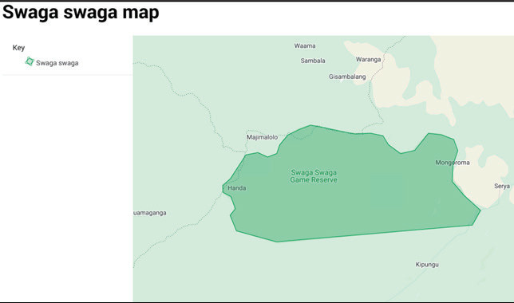

11. Select the paper size (3), paper orientation (4), and format for printing (either PDF or image) (5). Then click “Print” (6) to save the map as a PDF or image, as shown in Figures 15 and 16.

Figure 16: A map of Swaga Swaga Game Reserve